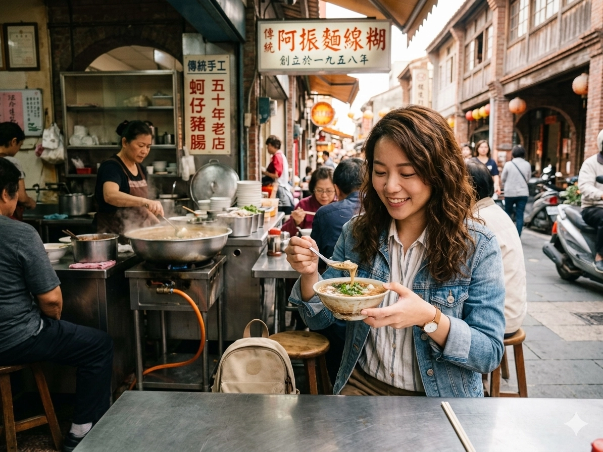
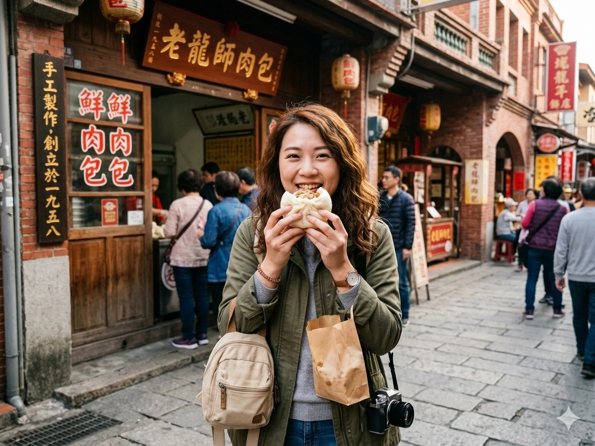
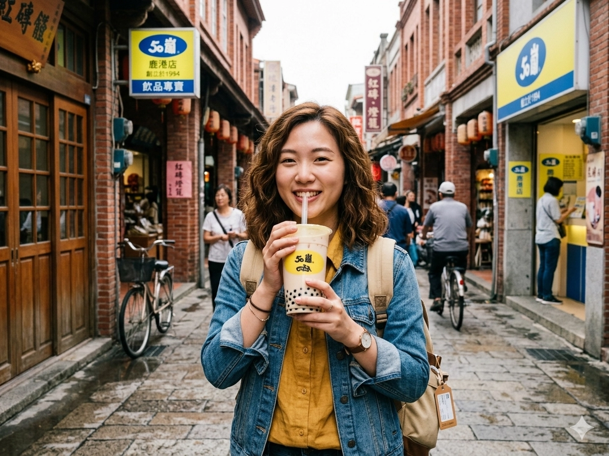

Lukang Mian Xian Hu
A Silky Noodle Masterpiece
"Drink" this centuries-old savory smoothie! Featuring handmade noodles, tender pork strips, and egg drops in a velvety broth. Experience the authentic Lukang ritual: add local rice vinegar and enjoy the melt-in-your-mouth texture. Nothing more, nothing less.
- Wang Wang Mian Xian Hu (王罔麵線糊)
- Longshan Mian Xian Hu (蚯蚓龍山麵線糊)

THAT
MEAT
BUN
Lukang’s steamed pork buns (Baozi) are more than just snacks—they are a local obsession. Imagine a pillowy-soft, hand-folded bun filled with a savory, juicy mixture of premium pork and aromatic scallions.
- A-Zhen Meat Bun (阿振肉包)
- Lao Long Shi Meat Bun (老龍師肉包)

TAIWANESE
BUBBLE
TEA
Experience the vibrant culture of a local tea shop! Beyond authentic bubble tea, these shops offer customizable, freshly made refreshments. Whether you crave classic boba or premium mountain oolong, discover why these hand-shaken specialties are a global obsession and a daily ritual in Taiwan.
- 50 Lan Hand-shaken Drinks (50嵐飲料店)
- 8yotea Hand-shaken Drinks (八曜和茶飲料店)
